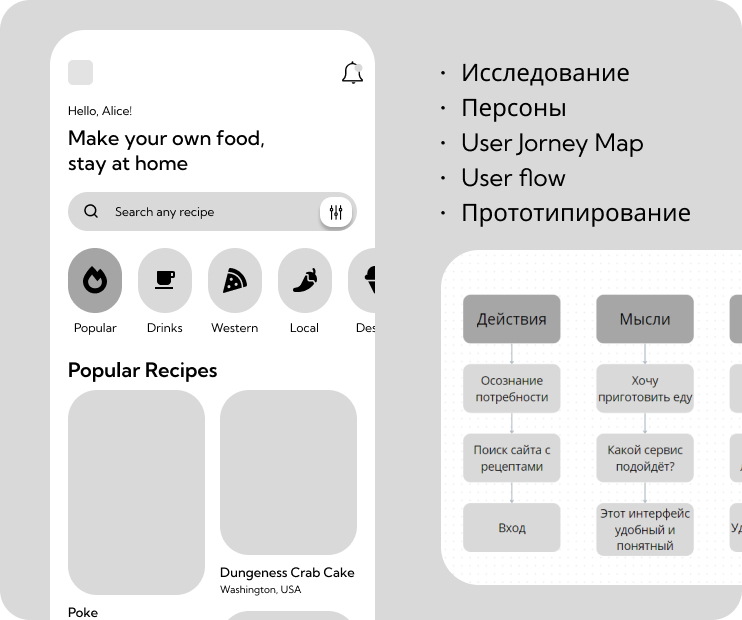
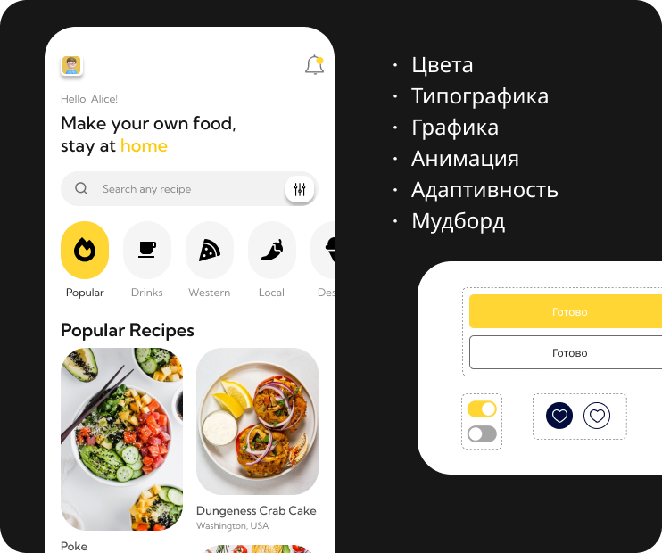

UX/UI дизайн
Знакомство с UX/UI
UX (user experience) и UI (user interface) дизайн — это взаимосвязанные, но различные области в проектировании цифровых продуктов и услуг.
UX

UX-дизайнеры отвечают за "что" и "как" пользователи взаимодействуют с продуктом. UX-дизайн — это комплексный подход, который опирается на потребности и опыт пользователей, чтобы создавать продукты, которыми люди действительно хотят и могут пользоваться.
Ключевых аспекты UX-дизайна:
1. Понимание пользователей. UX-дизайнеры изучают потребности, цели и поведение пользователей. Они используют методы исследований, таких как интервью, наблюдения и анализ данных.
2. Проектирование пользовательских сценариев. UX-дизайнеры сначала изучают, как будут использовать продукт реальные люди. Они узнают, какие задачи пользователи пытаются решить, какие у них потребности и ожидания. На основе этого понимания, UX-дизайнеры придумывают различные "сценарии" использования продукта. Например, как человек будет искать нужную информацию, как он будет совершать покупки.
3. Создание прототипов и тестирование. UX-дизайнеры создают быстрые прототипы, чтобы проверять идеи и получать обратную связь от пользователей.
4. Фокус на удобство использования.Основная цель UX-дизайна - сделать продукт максимально удобным, эффективным и приятным в использовании. Дизайнеры применяют принципы юзабилити, доступности и интуитивности.
Что будет если не продумать UX:
1. Неудобство и разочарование пользователей.Без продуманного UX, продукт будет сложным, запутанным и неинтуитивным в использовании. Пользователи будут тратить много времени и усилий, чтобы достичь своих целей.
2. Низкая эффективность. Непродуманная структура, навигация и взаимодействие замедляют выполнение задач. Пользователи тратят больше времени на поиск нужной информации или функций. Это снижает производительность и ухудшает впечатление от использования.
3. Высокие затраты.Исправление UX-проблем на поздних этапах разработки требует больших усилий и ресурсов. Необходимость переделывать интерфейс, функционал и структуру существенно увеличивает бюджет проекта.
4. Потеря конкурентоспособности.Пользователи ожидают интуитивных и удобных цифровых продуктов. Игнорирование UX-дизайна даёт преимущество конкурентам, предлагающим более качественный пользовательский опыт.
UI

UI-дизайнеры отвечают за "как это выглядит".
Ключевых аспекты UI-дизайна:
1. Графический дизайн.Выбор цветовой палитры, шрифтов, иконок, изображений и других визуальных элементов. Создание последовательного и привлекательного визуального стиля.
2. Дизайн интерфейса. Разработка макетов экранов, страниц, окон и других интерфейсных элементов. Продумывание расположения кнопок, меню, полей ввода и других интерактивных компонентов.
3. Взаимодействия и анимации.Проектирование плавных и интуитивных переходов между экранами. Создание анимаций для кнопок, иконок и других элементов, чтобы сделать интерфейс более живым и отзывчивым.
4. Юзабилити и доступность.Обеспечение удобства использования интерфейса и соблюдение принципов юзабилити. Учёт потребностей пользователей с ограниченными возможностями.
Что будет если не продумать UI:
1. Непривлекательный внешний вид. Без продуманного графического дизайна интерфейс будет выглядеть непрофессионально и неэстетично. Это оттолкнет пользователей и создаст негативное первое впечатление о продукте.
2. Сложность использования. Нелогичное расположение элементов управления, непонятные иконки и запутанная навигация затруднят взаимодействие. Пользователям будет трудно находить нужные функции и выполнять свои задачи.
3. Проблемы с доступностью. Отсутствие учета потребностей пользователей с ограниченными возможностями делает продукт недоступным для них.
4. Негативный имидж бренда. Непривлекательный и неудобный интерфейс ассоциируется с низким качеством продукта.